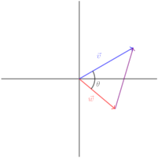

You may have noticed that while we can add and subtract vectors, and we can multiply them by scalars, there is no allowance for multiplying or dividing two vectors. In general, there is no requirement for a well-defined product of two vectors in a vector space. However, there are a couple of useful “product" operations that show up with real-valued vectors. One of these is called the dot product.
Definition1.3.1.
Definition of Dot Product Let \(\vcv\) and \(\vcw\) be two vectors in \(\bbr^n\text{.}\) Then the dot product of \(\vcv\) and \(\vcw\) is defined as:
is referred to as "the dot product version of the law of cosines". Why? Let’s find out. We’ll start by constructing a vector triangle, placing \(\vcv\) and \(\vcw\) in standard position:

Figure1.3.4.The Law of Cosines.
What is the purple vector (from the tip of \(\vcw\) to the tip of \(\vcv\))? Hint: Think about the geometric difference of two vectors.
What are the lengths of the three sides of this triangle? Hint: The length of a vector is its magnitude.
Using the Law of Cosines, write an expression relating your three side lengths and \(\theta\text{.}\)
Hint: Leave \(-2||\vcv|| \ ||\vcw||\cos\theta\) alone for now, but expand out all of the other magnitudes using the magnitude formula, expand, then see if anything cancels.
does not just hold in \(\bbr^2\) but in all \(\bbr^n\text{.}\) So in fact, the dot product can be used to identify the angle between two given vectors in any \(\bbr^n\text{.}\) This is particularly useful when we’re deciding if two vectors are orthogonal, that is, if they have an angle of \(90^\circ\) between them.
Exercise1.3.5.
Use the dot product to find the following angles.
Let \(\vcv=2\vci+2\vcj\) and let \(\vcu=-\vci+\vcj\text{.}\) Find the angle between \(\vcv\) and \(\vcu\text{.}\)
Let \(\vcv=\bmat{3\\2\\1}\) and let \(\vcu=\bmat{2\\-5\\1}\text{.}\) Find the angle between \(\vcv\) and \(\vcu\text{.}\)